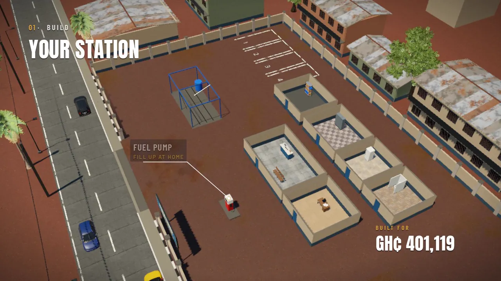
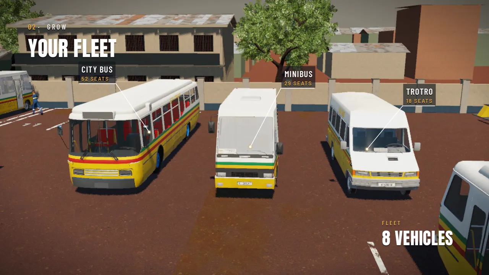
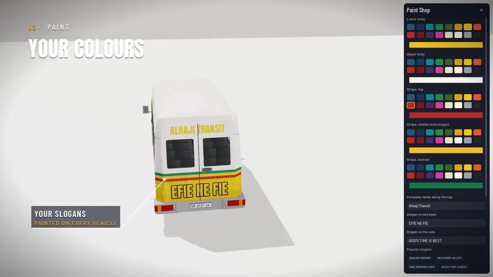
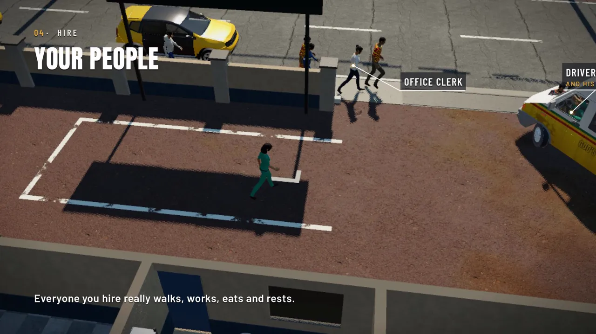
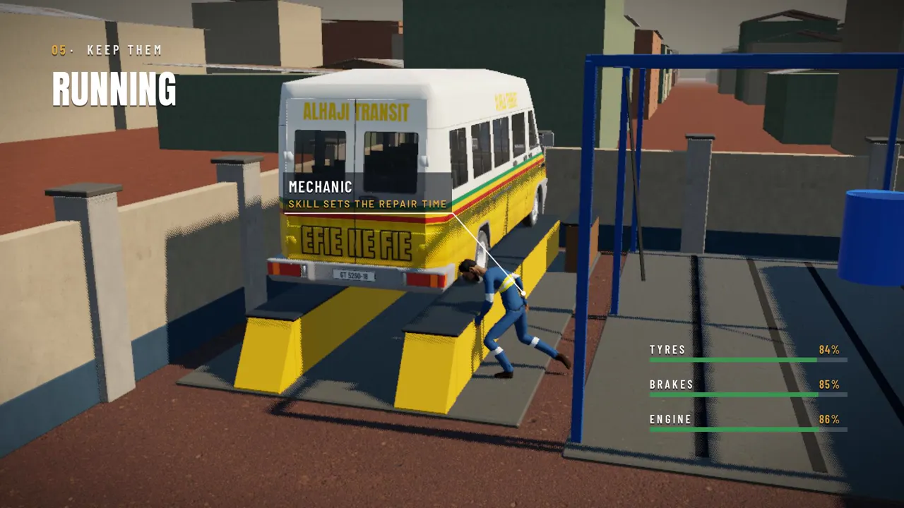
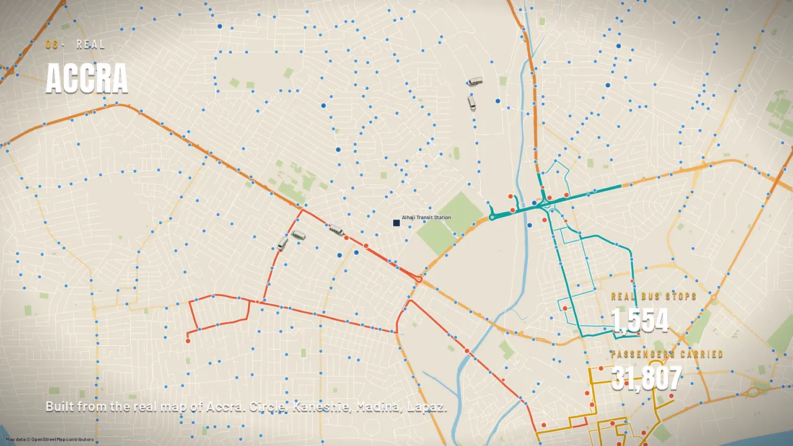
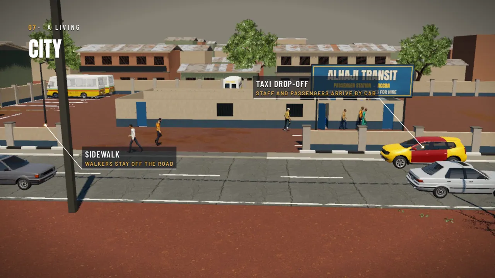
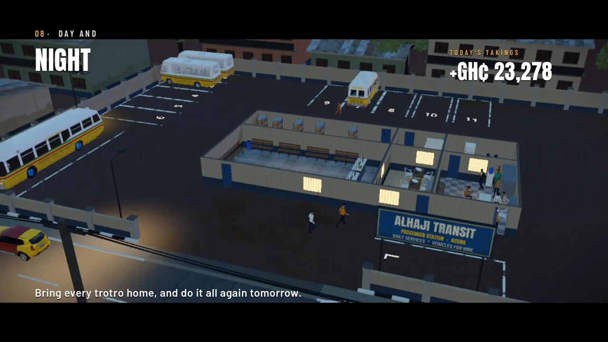

Build your station
Ticket office, rest room, kitchen, store, fuel pump, wash bay and service ramp. Lay it all out your way.
Build the biggest transport company in Accra. Lay out your station, hire drivers and mates, keep every trotro on the road, and grow from one van to a fleet of buses.
Free demo for Windows 10 and 11. Runs on everyday laptops.
Everything in your yard is real and moves for a reason. Nobody teleports: a mechanic walks to the store for a tyre, a driver and his mate walk out to their trotro, passengers queue at the ticket office.

Ticket office, rest room, kitchen, store, fuel pump, wash bay and service ramp. Lay it all out your way.

Start with one trotro. Add minibuses and full-size city buses as the money comes in.

Your company's colours, stripes and slogans, painted on every vehicle.

Drivers and mates, ticket sellers, mechanics, cleaners and clerks. They walk, work, eat and rest.

Tyres, brakes and engines wear out. A skilled mechanic fixes them faster. A breakdown on the road means a tow.

Routes on the real map of Accra, with more than 1,600 real stops: Circle, Kaneshie, Madina, Lapaz.

Traffic that keeps its lane, taxis dropping off staff and passengers, walkers on the sidewalk.

Bring every trotro home at night, count the day's takings, and do it all again tomorrow.
The demo is one station in Accra. The full game is planned to grow far beyond it.
One station in Accra, a fleet of trotros, minibuses and buses, staff, repairs and real routes.
Start in real places across the city, each one built to look like the place it is.
Around 200 places to start from across West Africa, and trips that cross borders and take days.
Trotro Tycoon is made in Accra by one developer. Founders pay once and get everything that comes after, and their support decides how fast the full game arrives.
Pay with Mobile Money or card, securely through Paystack.
Every report is read and shows on the site, so you can see what's been fixed.
Report a problem